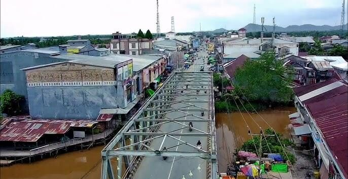

Profil & Sejarah
Kenali identitas dan perjalanan Desa Tebas Sungai.
Selengkapnya →SELAMAT DATANG DI
Mengenal desa, potensi, kegiatan, dan cerita masyarakat Tebas Sungai dalam satu halaman.

TENTANG DESA
Website ini menjadi media informasi dan promosi untuk memperkenalkan Desa Tebas Sungai kepada masyarakat luas. Temukan informasi mengenai profil desa, kegiatan, potensi, galeri, serta berita terbaru.
Kenali desa kami →Kenali identitas dan perjalanan Desa Tebas Sungai.
Selengkapnya →Dokumentasi suasana dan aktivitas desa.
Lihat galeri →Informasi dan kegiatan terbaru.
Baca berita →